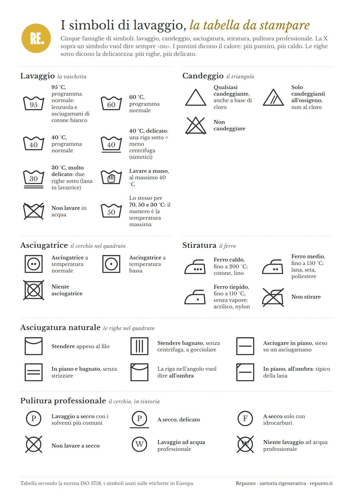

Simboli di lavaggio: cosa vogliono dire
Sulle etichette dei vestiti ci sono cinque famiglie di simboli: la vaschetta per il lavaggio, il triangolo per il candeggio, il quadrato per l'asciugatura, il ferro per la stiratura e il cerchio per la tintoria. Qui sotto li trovi spiegati uno per uno; la tabella da stampare e appendere vicino alla lavatrice te la mando gratis.

Come si leggono i simboli di lavaggio?
Bastano tre regole per capire quasi ogni etichetta, in Italia e in tutta Europa (i simboli sono quelli della norma ISO 3758):
- La X sopra un simbolo vuol dire sempre «no»: non lavare, non candeggiare, non stirare.
- I puntini dicono il calore: più puntini, più caldo (asciugatrice e ferro da stiro).
- Le righe sotto dicono la delicatezza: una riga = programma delicato, due righe = molto delicato.
Cosa vuol dire la vaschetta con il numero?
La vaschetta è il lavaggio in acqua. Il numero è la temperatura massima in gradi: si può sempre lavare più freddo, mai più caldo. La mano dentro la vaschetta vuol dire lavaggio a mano.
Cosa vuol dire il triangolo?
Il triangolo è il candeggio, cioè la candeggina e gli smacchiatori sbiancanti. Vuoto si può usare qualsiasi candeggiante; con due righe oblique solo quelli all'ossigeno; barrato, niente candeggina.
Cosa vuol dire il quadrato con il cerchio?
Il quadrato con il cerchio dentro è l'asciugatrice. I puntini dicono la temperatura: due puntini normale, uno bassa.
Quali sono i simboli dell'asciugatura naturale?
Il quadrato senza cerchio è l'asciugatura all'aria. Le righe dentro dicono come stendere: la curva in alto appeso al filo, le righe verticali bagnato a gocciolare, la riga orizzontale in piano. La riga nell'angolo vuol dire all'ombra.
Cosa vogliono dire i puntini sul ferro da stiro?
I puntini sul ferro sono la temperatura della piastra: tre puntini fino a 200 °C, due fino a 150 °C, uno fino a 110 °C e senza vapore.
Cosa vuol dire il cerchio con la P o la W?
Il cerchio riguarda la pulitura in tintoria e serve soprattutto a chi ci lavora. La P e la F indicano il lavaggio a secco con i solventi, la W il lavaggio ad acqua professionale; il cerchio barrato vuol dire niente tintoria a secco.
Come si legge un'etichetta, dall'inizio alla fine
I simboli sono sempre nello stesso ordine: lavaggio, candeggio, asciugatura, stiratura, tintoria. Questa etichetta, per esempio:
vuol dire: lavatrice a 40 °C con programma delicato, niente candeggina, niente asciugatrice, asciugare in piano, ferro tiepido, lavaggio a secco delicato.
Se l'etichetta non c'è più, tratta il capo come il più delicato che hai: a mano o a 30 °C con programma delicato, niente asciugatrice, in piano, ferro tiepido. Se è lana o seta, a mano e basta.
Come far durare di più i vestiti
Nel mio laboratorio ai piedi dell'Etna do una seconda vita ai tessuti che nessuno usa più, e l'etichetta è la prima cosa che guardo. Lavare meno e più freddo, rovesciare i capi prima della lavatrice, stendere all'ombra i colori scuri e riparare subito un punto scucito: sono le abitudini che allungano di anni la vita di un vestito.
La lana teme il caldo e lo sfregamento, non l'acqua: se un maglione ti si è già infeltrito, ho scritto come provare a recuperarlo e cosa farne se non torna come prima: maglione infeltrito, come recuperarlo →
Ancora dubbi sulle etichette?
I simboli di lavaggio sono uguali in tutto il mondo?
In Europa e in gran parte del mondo si usano i simboli della norma ISO 3758, quelli di questa pagina. Negli Stati Uniti le etichette usano gli stessi disegni, ma la temperatura del lavaggio a volte è indicata con dei puntini dentro la vaschetta invece che con il numero.
Cosa vuol dire la riga sotto la vaschetta?
Una riga sotto vuol dire programma delicato, con meno movimento e centrifuga più bassa (di solito per i sintetici). Due righe vogliono dire molto delicato, il programma della lana.
Posso lavare in lavatrice un capo con la mano nella vaschetta?
La mano vuol dire lavaggio a mano, al massimo a 40 °C. Molte lavatrici hanno un programma «lana» o «lavaggio a mano» con poca centrifuga: è il più vicino, ma con lana e seta delicate la mano resta la scelta più sicura.
Cosa succede se lavo più caldo di quanto dice l'etichetta?
Il capo può restringersi, scolorire o, se è lana, infeltrirsi. Lavare più freddo invece non rovina niente: per i capi poco sporchi 30 °C bastano quasi sempre e si risparmia energia.
La tabella da stampare è davvero gratis?
Sì. Lasci la tua email, ti iscrivi alla newsletter mensile di Repunto e la scarichi subito. Puoi cancellarti quando vuoi con un clic in fondo a ogni email.

Tutti i simboli in una pagina, da appendere vicino alla lavatrice
Due pagine A4: la tabella completa e una guida per leggere le etichette e far durare i vestiti. Te la mando insieme alla mia lettera mensile dal laboratorio.